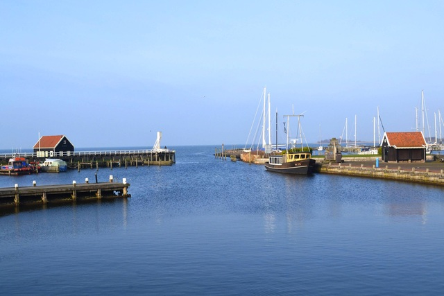
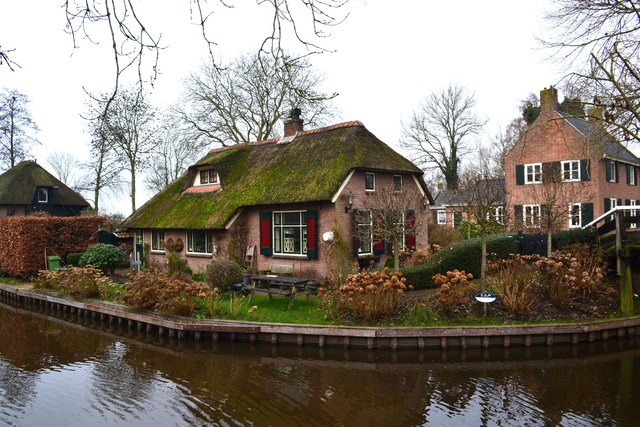

ふと気づくと2両編成の電車の乗客は僕だけになり、単線の無人駅で降りてどこまでも続く干拓地沿いの道を30分ほど歩いてヒンデローペンの街へ。オランダ北部のアイセル湖に面した港町である。この街の素晴らしさは、かつてハンザ同盟都市として栄えた港町の面影を古い街路や木製の跳ね橋に残しつつ寂れているその雰囲気だと思う。1月 の短い日が暮れかかり寂れた街の空気を際立たせていた。晩秋〜冬に美しくなる街だと思う。

茅葺屋根の可愛い家々と細い運河が張り巡らされた水郷の村。ヒートホルンは「ヤギの角」という意味らしい。車が入れる道路がなく、自転車と小舟が主要な交通手段で小舟でしか辿り着けない家もある。古くは泥炭採掘で栄え泥炭運搬のために建設された運河が今は生活の足になっている。

エダムから3kmほど海岸に向かって歩くとフォーレンダムの港町に着く。
アムステルダムからバスで40分ほどの小さな街。観光地化が進んでいるわけではなく街に息づく生活を感じられるのがいい。
運河がめぐる都市アムステルダム。オランダ東インド会社の黄金時代にアントウェルペンに代わって国際交易の結節点として発達した街には網の目のように運河が張り巡らされ、表通りから一本入ると裏路地ならぬ裏運河の静かで美しい風景が広がる。気温は1度。
オランダの伝統的な風車が観光用に残されている。どんよりとした冬の空。チューリップの季節に来るべきだった。